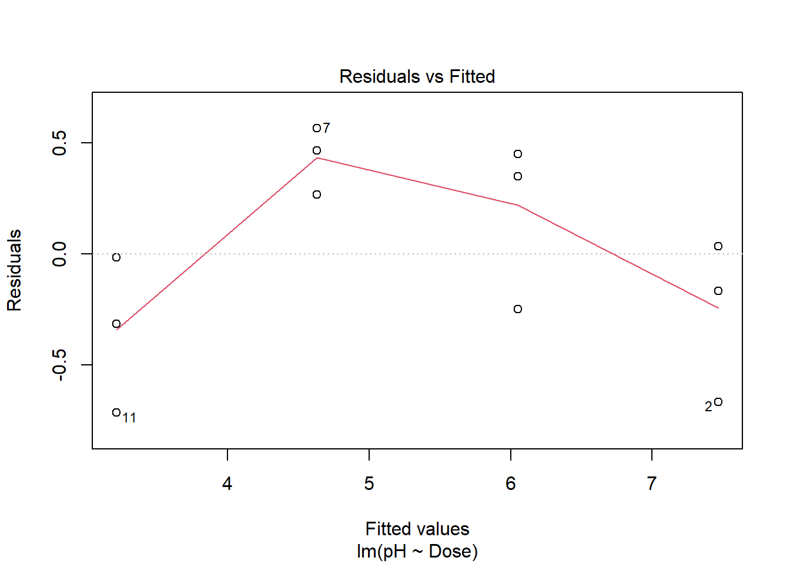
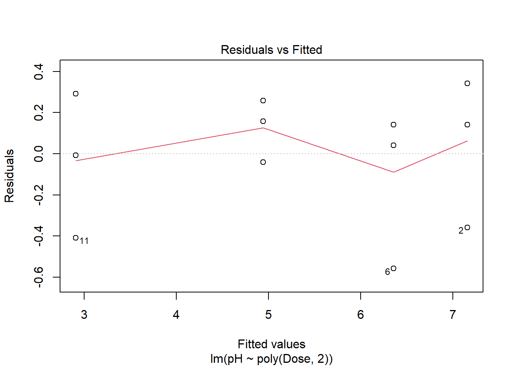

11 Ajuste linear a partir da IA
Nesta seção nós iremos explorar se ferramentas de inteligência artificial seriam capazes de orientar a análise de regressão e fornecer scripts úteis.
No entanto, cuidado! Recomendamos que todas as saídas fornecidas por IA sejam avaliadas por profissionais competentes na área, que se responsabilizem pelos resultados.
Além disso, dados sensíveis, pessoais ou institucionais, não devem ser fornecidos aos operadores de IA via prompts.
Ao executar esses passos, você terá uma boa ideia de qual modelo melhor representa a relação entre Dose e pH para este conjunto de dados, considerando tanto a significância estatística quanto a adequação do modelo aos dados.
11.1 Atividade Prática 1
Construa um prompt para inteligência artificial com o objetivo de obter orientações estatísticas e um script pronto para a análise de regressão e seleção de modelos.
Prompt
Resposta do chatGPT-4
- Importar os Dados
data.frame diretamente.
df <- data.frame(
Unidade = 1:12,
Tratamentos = rep(LETTERS[1:4], each = 3),
Dose = rep(c(0, 10, 20, 30), each = 3),
pH = c(7.3, 6.8, 7.5, 6.5, 6.4, 5.8, 5.2, 4.9, 5.1, 3.2, 2.5, 2.9)
)- Ajustar Modelos Lineares
# Modelo Linear Simples
modelo_linear <- lm(pH ~ Dose, data = df)
# Modelo Linear Quadrático
modelo_quadratico <- lm(pH ~ poly(Dose, 2), data = df)- Comparar Modelos
anova(modelo_linear, modelo_quadratico)## Analysis of Variance Table
##
## Model 1: pH ~ Dose
## Model 2: pH ~ poly(Dose, 2)
## Res.Df RSS Df Sum of Sq F Pr(>F)
## 1 10 2.08500
## 2 9 0.94417 1 1.1408 10.875 0.009264 **
## ---
## Signif. codes: 0 '***' 0.001 '**' 0.01 '*' 0.05 '.' 0.1 ' ' 1- Diagnóstico do Modelo
Vamos analisar os resíduos dos modelos ajustados.
# Para o Modelo Linear
plot(modelo_linear, 1)
# Para o Modelo Quadrático
plot(modelo_quadratico, 1)
- Testar a Falta de Ajuste
# Teste de Falta de Ajuste para Modelo Linear
anova(modelo_linear)## Analysis of Variance Table
##
## Response: pH
## Df Sum Sq Mean Sq F value Pr(>F)
## Dose 1 30.104 30.1042 144.38 2.885e-07 ***
## Residuals 10 2.085 0.2085
## ---
## Signif. codes: 0 '***' 0.001 '**' 0.01 '*' 0.05 '.' 0.1 ' ' 1# Teste de Falta de Ajuste para Modelo Quadrático
anova(modelo_quadratico)## Analysis of Variance Table
##
## Response: pH
## Df Sum Sq Mean Sq F value Pr(>F)
## poly(Dose, 2) 2 31.2450 15.6225 148.92 1.268e-07 ***
## Residuals 9 0.9442 0.1049
## ---
## Signif. codes: 0 '***' 0.001 '**' 0.01 '*' 0.05 '.' 0.1 ' ' 1- Interpretação Estatística
- Resumo dos Modelos
# Sumário do Modelo Linear
summary(modelo_linear)##
## Call:
## lm(formula = pH ~ Dose, data = df)
##
## Residuals:
## Min 1Q Median 3Q Max
## -0.71667 -0.26667 0.00833 0.37500 0.56667
##
## Coefficients:
## Estimate Std. Error t value Pr(>|t|)
## (Intercept) 7.46667 0.22057 33.85 1.20e-11 ***
## Dose -0.14167 0.01179 -12.02 2.89e-07 ***
## ---
## Signif. codes: 0 '***' 0.001 '**' 0.01 '*' 0.05 '.' 0.1 ' ' 1
##
## Residual standard error: 0.4566 on 10 degrees of freedom
## Multiple R-squared: 0.9352, Adjusted R-squared: 0.9287
## F-statistic: 144.4 on 1 and 10 DF, p-value: 2.885e-07# Sumário do Modelo Quadrático
summary(modelo_quadratico)##
## Call:
## lm(formula = pH ~ poly(Dose, 2), data = df)
##
## Residuals:
## Min 1Q Median 3Q Max
## -0.55833 -0.12083 0.09167 0.18333 0.34167
##
## Coefficients:
## Estimate Std. Error t value Pr(>|t|)
## (Intercept) 5.3417 0.0935 57.130 7.77e-13 ***
## poly(Dose, 2)1 -5.4867 0.3239 -16.940 3.91e-08 ***
## poly(Dose, 2)2 -1.0681 0.3239 -3.298 0.00926 **
## ---
## Signif. codes: 0 '***' 0.001 '**' 0.01 '*' 0.05 '.' 0.1 ' ' 1
##
## Residual standard error: 0.3239 on 9 degrees of freedom
## Multiple R-squared: 0.9707, Adjusted R-squared: 0.9642
## F-statistic: 148.9 on 2 and 9 DF, p-value: 1.268e-0711.2 Atividade Prática 2
Construa um prompt para inteligência artificial com o objetivo de criar uma visualização do ajuste com alta qualidade.
Prompt
Resposta do chatGPT-4
if(!requireNamespace("dplyr", quietly = TRUE)) install.packages("dplyr")
if(!requireNamespace("plotly", quietly = TRUE)) install.packages("plotly")
library(plotly)
library(dplyr)
# Calculando predições e intervalos de confiança
predicoes <- predict(mod_quad, newdata = dados, interval = "prediction", level = 0.95)
# Adicionando as predições e intervalos de confiança ao data frame
dados <- dados %>%
mutate(
fitted = predicoes[,"fit"],
lwr = predicoes[,"lwr"],
upr = predicoes[,"upr"]
)
# Gráfico com plotly
plot_vis <- plot_ly(dados) %>%
add_trace(
x = ~Dose,
y = ~pH,
type = 'scatter',
mode = 'markers',
name = 'Dados Observados',
marker = list(color = 'red', size = 10)
) %>%
add_trace(
x = ~Dose,
y = ~fitted,
type = 'scatter',
mode = 'lines',
name = 'Ajuste Quadrático',
line = list(color = 'blue')
) %>%
add_trace(
x = ~Dose,
y = ~lwr,
type = 'scatter',
mode = 'lines',
name = 'Limite Inferior 95%',
line = list(color = 'rgba(173,216,230,0.4)')
) %>%
add_trace(
x = ~Dose,
y = ~upr,
type = 'scatter',
mode = 'lines',
name = 'Limite Superior 95%',
fill = 'tonexty',
line = list(color = 'rgba(173,216,230,0.4)')
) %>%
layout(
title = "Ajuste Quadrático do pH em função da Dose",
xaxis = list(title = "Dose (mg)"),
yaxis = list(title = "pH")
)
# Visualizar o gráfico
plot_vis